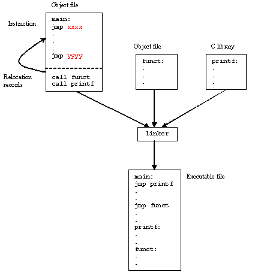
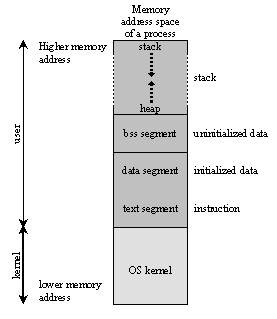

There are 3 steps of compiling C++ code:
In order to get only the preprocessed file we can run the
g++ -E hello-world.cpp -o hello-world.ii
which will produce the hello-world.ii file and then we can look inside of it and find out what it includes.
hello-world.ii
Tip: Prefer using const, enum, and inlines to #define
const
enum
inlines
#define
#define A_RATIO = 1.18 // bad const double ARatio = 1.18 // good
To get the object file we can run
g++ -c hello-world.ii
or
g++ -c hello-world.cpp
and we can then look inside what an object file looks like with
nm hello-world.o
objdump -t hello-world.o
The linker just links all of the object files into one executable file.

The memory layout can be divided into five sections:
This is all the space and data the program needs in order to run properly.
\[ address space = memory space \]

0: #include "stdio.h" 1: 2: void f(int *j) 3: { 4: (*j)++; 5: } 6: 7: int main() 8: { 9: int i = 20; 10: int *p = &i; 11: f(p); // or f(&i); will yield the same result 12: printf("i = %d\n", i); 13: 14: return 0; 15: }
0: #include <iostream> 1: 2: void f(int& a) 3: { 4: a += 1; 5: } 6: 7: int main() 8: { 9: int a = 5; 10: f(a); 11: std::cout << "a = " << a << std::endl; 12: 13: return 0; 14: }